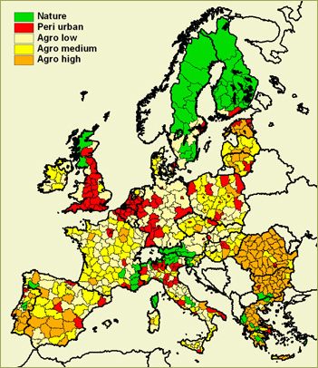

Most indicators are available at the regional level. Europe is divided into 668 regions. The regions can be aggregated to 5 cluster regions.

All indicators are available for the 27 EU member states.
About maps & regions
The maps of Eururalis are presented at four spatial scale levels:
|  Most indicators are available at the regional level. Europe is divided into 668 regions. The regions can be aggregated to 5 cluster regions. |
All indicators are available for the 27 EU member states. |
Regional division
In Eurualis Europe is divided into 668 regions. The division of regions is based
on the HARM regional division for the EU25. This division is taken because this
is the lowest scale level where detailed information is available. For Bulgaria
and Romania this division is not yet available. For those regions the NUTSX
division was taken.
Cluster regions
The information on the 668 regions is not only aggregated to 27 EU countries,
but also to the 5 cluster regions. The cluster regions are divided in the following
five types
The peri urban regions are those regions that are predominantly peri-urban according to the OECD typology (1994). The second type of regions consist of regions where the share of agriculture in the total land-use is less than 25%. These regions have a predominantly natural land-use.
The remaining regions all have a high share of agricultural land-use, but differ
in the economic significance of agriculture.
The agri high regions are regions where agriculture contributes to more than
15% of the regions total gross value added (GVA). In the agri low regions the
GVA from agriculture is less than 5%. The medium regions are in between.